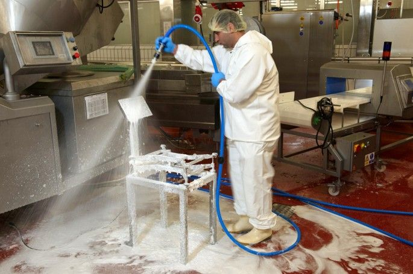
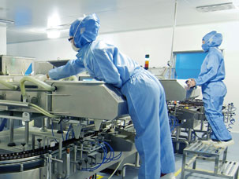

"Para conseguir una limpieza higiénicamente limpia, a menudo se emplean preparados combinados que tienen un efecto de desinfección y limpieza, pero que al mismo tiempo se contemplan como sustancias peligrosas. Y esto, a su vez, requiere las medidas de protección correspondientes."
Limpiador Biodegradable
Los limpiadores biodegradables se han centrado especialmente en los temas de salud y protección del medio ambiente. Y al mismo tiempo los productos tienen que ser igual de eficaces que los demás limpiadores. De acuerdo con la norma DIN EN ISO 17025 el resultado debería ser un concentrado alcalino con base acuosa, este debe estar libre de disolventes orgánicos y fosfatos, y es biodegradable, descomponiéndose al 85 % en 28 días. En función del grado de suciedad puede emplearse con agua disuelto o en altas concentraciones, sin que se liberen vapores tóxicos para la salud. Efectividad junto con protección del medio ambiente y conformidad con las normas.
Limpieza eficaz y respetuosa con el medio ambiente en la industria alimenticia-limpiador para máquinas de alimentos
En la fabricación de productos alimenticios, el tema de la higiene es sumamente importante, puesto que del mantenimiento y la limpieza de aparatos y superficies depende la salud de las personas, tanto de las que forman parte del proceso de fabricación y procesamiento, como de las que son consumidores. Es fundamental elegir un limpiador eficaz, de buena compatibilidad, conforme a las normas y, a ser posible, biodegradable. La clave está en el concepto «conforme a HACCP» (Hazardous Analysis and Critical Control Points, análisis de peligros y puntos de control críticos). De acuerdo con estas especificaciones higiénicas vigentes en toda la UE, los frigoríficos, por ejemplo, tienen que limpiarse al menos una vez al mes, los congeladores cada seis meses como mínimo y las vitrinas refrigeradas a diario. Para elegir el producto de limpieza adecuado, hay que tener en cuenta la compatibilidad de la superficie y el tipo de suciedad: si se van a limpiar superficies de trabajo cerámicas, carcasas metálicas, rejillas de plástico o superficies de vidrio, se necesitarán distintos planteamientos. Lo mismo ocurre al eliminar restos de alimentos, aceites o grasas. La directiva UE prevé indicar en la descripción del producto de limpieza para qué superficies y para qué tipo de suciedad exactamente es adecuado.
